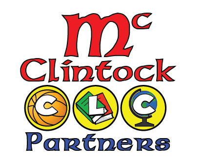
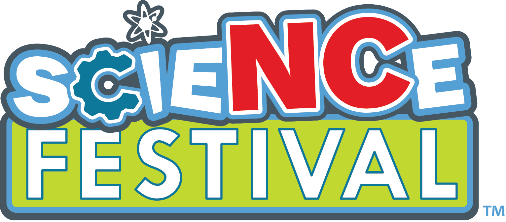

|
Carla Bendezu |
 |
|
Carla Bendezu |
|

My participation with Student Leadership Corps (SLC) began in the Spring of 2012. This program
not only brought many experiences and knowledge, it also allowed me to network. During my first semester with STARS I was able to meet
several graduate and Ph. D. students,giving me the oportunity to learn from them and to set up better goals towards my Degree. Stars also motivated
me to make my first poster presentation by the end of the Spring semester, and a couple of months later presenting it again at STARS Celebration
Conference in Hampton, Virginia.
The mission of the STARS (Students & Technology in Academia, Research & Service) Alliance is to increase the participation of women,
under-represented minorities, and persons with disabilities in computing disciplines through multi-faceted interventions. The
interventions focus on the influx and progression of students from middle school through graduate school in programs that lead to
computing careers.
For more information, please click on STARS
Working with SPARCS was one of the most fun volunteering experiences I ever had
in my life, this program is sponsored by the Charlotte branch of the NSF STARS Alliance. Being able to see the process of students
realizing how computer science is not a career path for boring nerd people, and that instead is a fun and creative way to go beyond
their imagination was an amazing experience.
UNCC - SPARCS was initiated over a year ago, but it is a program initiated in *October 2007 at North Carolina State University, and
is now in its fifth year of operation. SPARCS is a middle school outreach program aimed at broadening participation in computer
science. This program offers monthly Saturday sessions with hands-on learning activities to introduce students to computer science
concepts and practical applications including Scratch, web design, and LEGO Mindstorm robotics.
For more information, please click on UNCC-SPARCS
By being able to work with Ph. D. Students, I was able to be recognized
for my work and for my desired to grow. The opportunity to work in REU was presented to me by the end of the Spring Semester
of 2012, and after being interviewed I was able to enter to the GameChanger research. This research is done with the intend to
create mobile and Kinect exergames to promote health and wellbeing. *The project goals are to advance game development and interfaces
and sensor networks technologies and protocols to support human interaction with virtual environments without tethering the human
to controllers, head-mounted displays or other physical devices.
I am thankful to have this opportunity and to know that my desired to learn and grow, plus working hard towards my goals was
recognized and rewarded by this amazing experiences.
For more information, please click on REU
Being an EA allowed me to see STARS from another perspective; I was not only a volunteer/ mentor/ lead l was able to see what mistakes were being made and help other programs other than mine to perform better. I was also able to answer questions that I had and that other leads or volunteer had but we never asked. I was able to learn more about the importance of the numbers, the mechanism, and how this organization works. STARS was not another organization from school that I belonged to, this time I was STARS. What better satisfaction than doing what you like to do and know that your work can make a difference in a child’s life. Learning the logistics of this organization allowed me to think even bigger and know that I can also keep doing this after graduating.
Partners that I had the pleasure to work with:




{kind=link}
{kind=link}
{kind=link}